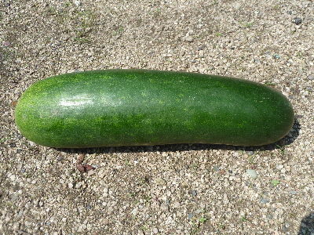
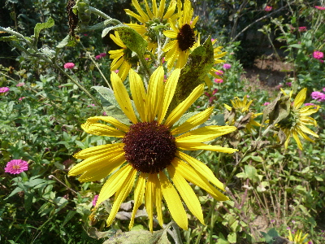
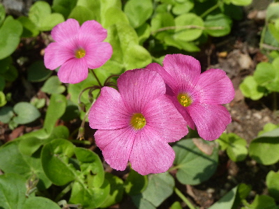
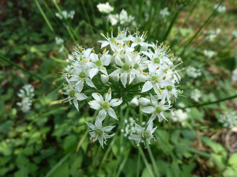
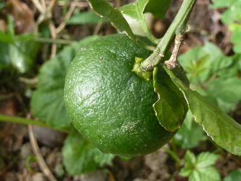
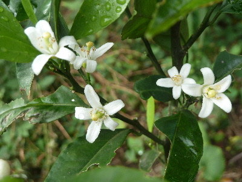

遊びで植物を育てよう
2016/09/11
冬瓜は大きいな。
これは姫冬瓜で小さいサイズの冬瓜なんですが、
それでも大きい。

冷蔵庫で場所をとりそうだ。
1本食べるのに何日かかるんだろう。
【9月TOP】
【日記TOP】
【園芸TOP】
2016/09/11
季節の花が変わっていきますね。
秋になったので、ひまわりがしおれてきました。

夏の間いなかったカタバミの花が咲き出しました。

これから涼しくなるんだなー。
【9月TOP】
【日記TOP】
【園芸TOP】
2016/09/11
今年もニラの花が綺麗に咲きました。
最近はモロヘイヤとかツルムラサキが収穫できるので、ニラの存在をすっかり忘れていました。

もっと収獲して食べればよかった。
1月したらニラの種でも採ってみようかな。
【9月TOP】
【日記TOP】
【園芸TOP】
2016/09/04
ミカンの花が咲いています。（狂い咲きバージョン）
只今、青いみかんが出来ています。

まだまだ食べれるまでしばらくかかりそう。

同じ木ですが、花が咲きました。
今咲いてしまったってことは、来年は花が少なそうです。
【9月TOP】
【日記TOP】
【園芸TOP】
過去の日記
【2024年9月の日記】
【2023年9月の日記】
【2022年9月の日記】
【2021年9月の日記】
【2020年9月の日記】
【2019年9月の日記】
【2018年9月の日記】
【2017年9月の日記】
【2016年9月の日記】
【2015年9月の日記】
【2014年9月の日記】
【2013年9月の日記】
【2012年9月の日記】
【9月TOP】
【日記TOP】
【園芸TOP】
畑仕事じゃないよ。
【おいしいものを食べよう。】【たくさん寝よう。】
【ソロ活をしよう!】【季節感のあることをしよう。】【動画視聴はほどほどに。】【当サイトの全てのコンテンツは無断転載禁止です。】